Module 1: Exploratory Data Analysis and Clustering
Lab
The goal of this lab is to examine correlation structure in a sample transcriptomic dataset using clustering.
We will start using a small mouse expression dataset from two tissues:
- We will briefly explore the dataset using
dim(),head(), andsummary() - We will visualize correlation using
pairs()andcorrplot() - We will cluster samples using k-means and hierarchical clustering methods using
dist()andhclust()- We will assign samples to clusters using
cutree()and visualize these usingheatmap()
- We will assign samples to clusters using
- We will use
clValidto find out what cluster number best separates groups
Finally we will explore clustering in a more complex bladder cancer dataset.
Load mouse data
For this exercise we are going to load a dataset built into the clValid package.
This dataset measures 147 genes and expressed sequence tags in two developing mouse lineages: the neural crest cells and mesoderm-derived cells.
There are three samples per group.
Let’s load the data.
Use str() to see what types of data the columns have:
## 'data.frame': 147 obs. of 8 variables:
## $ ID : Factor w/ 147 levels "1415787_at","1415904_at",..: 111 88 93 74 138 103 46 114 112 24 ...
## $ M1 : num 4.71 3.87 2.88 5.33 5.37 ...
## $ M2 : num 4.53 4.05 3.38 5.5 4.55 ...
## $ M3 : num 4.33 3.47 3.24 5.63 5.7 ...
## $ NC1: num 5.57 5 3.88 6.8 6.41 ...
## $ NC2: num 6.92 5.06 4.46 6.54 6.31 ...
## $ NC3: num 7.35 5.18 4.85 6.62 6.2 ...
## $ FC : Factor w/ 9 levels "ECM/Receptors",..: 3 8 6 6 1 3 1 6 5 6 ...Another command is head():
## ID M1 M2 M3 NC1 NC2 NC3
## 1 1448995_at 4.706812 4.528291 4.325836 5.568435 6.915079 7.353144
## 2 1436392_s_at 3.867962 4.052354 3.474651 4.995836 5.056199 5.183585
## 3 1437434_a_at 2.875112 3.379619 3.239800 3.877053 4.459629 4.850978
## 4 1428922_at 5.326943 5.498930 5.629814 6.795194 6.535522 6.622577
## 5 1452671_s_at 5.370125 4.546810 5.704810 6.407555 6.310487 6.195847
## 6 1448147_at 3.471347 4.129992 3.964431 4.474737 5.185631 5.177967
## FC
## 1 Growth/Differentiation
## 2 Transcription factor
## 3 Miscellaneous
## 4 Miscellaneous
## 5 ECM/Receptors
## 6 Growth/DifferentiationSummary provides useful information about the distribution of variables. Note that FC has categorical variables:
## ID M1 M2 M3
## 1415787_at: 1 Min. :2.352 Min. :2.139 Min. :2.500
## 1415904_at: 1 1st Qu.:4.188 1st Qu.:4.151 1st Qu.:4.207
## 1415993_at: 1 Median :4.994 Median :5.043 Median :5.054
## 1416164_at: 1 Mean :5.166 Mean :5.140 Mean :5.231
## 1416181_at: 1 3rd Qu.:6.147 3rd Qu.:6.015 3rd Qu.:6.129
## 1416221_at: 1 Max. :9.282 Max. :9.273 Max. :9.228
## (Other) :141
## NC1 NC2 NC3 FC
## Min. :2.100 Min. :1.996 Min. :2.125 EST :31
## 1st Qu.:4.174 1st Qu.:4.136 1st Qu.:4.293 Transcription factor :28
## Median :4.996 Median :5.056 Median :4.974 Miscellaneous :25
## Mean :5.120 Mean :5.134 Mean :5.118 ECM/Receptors :16
## 3rd Qu.:5.860 3rd Qu.:5.920 3rd Qu.:5.826 Growth/Differentiation:16
## Max. :8.905 Max. :8.954 Max. :9.251 Unknown :10
## (Other) :21What are the values in FC?
##
## ECM/Receptors EST Growth/Differentiation
## 16 31 16
## Kinases/Phosphatases Metabolism Miscellaneous
## 7 8 25
## Stress-induced Transcription factor Unknown
## 6 28 10Usually the information about samples (“metadata”) is in a different table.
Let’s load the sample information about the mouse dataset:
Let’s look at it:
## SampleID Type
## 1 M1 Mesenchymal
## 2 M2 Mesenchymal
## 3 M3 Mesenchymal
## 4 NC1 Neural-crest
## 5 NC2 Neural-crest
## 6 NC3 Neural-crestLet’s use pairs() to look at pairwise scatterplots of the expression data in a single plot. We need to subset the columns with the expression data first:
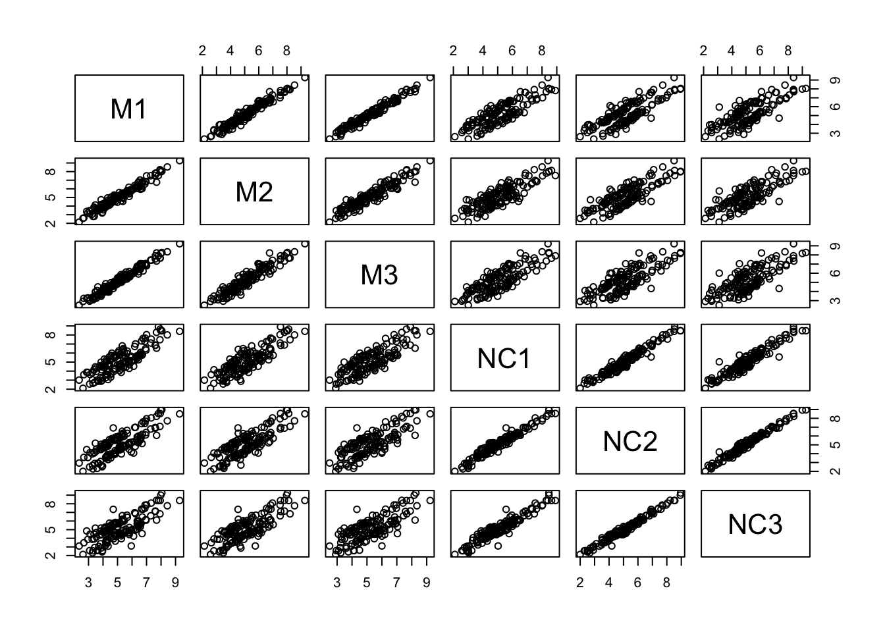
Correlations, distances, and clustering
Let’s look at sample correlation matrix. This should be a square matrix, equal to the number of samples.
We have six samples, so the correlation matrix should be 6x6.
## corrplot 0.95 loaded## [1] 6 6## M1 M2 M3 NC1 NC2 NC3
## M1 1.00 0.98 0.98 0.84 0.81 0.78
## M2 0.98 1.00 0.95 0.84 0.81 0.79
## M3 0.98 0.95 1.00 0.82 0.78 0.75
## NC1 0.84 0.84 0.82 1.00 0.97 0.95
## NC2 0.81 0.81 0.78 0.97 1.00 0.99
## NC3 0.78 0.79 0.75 0.95 0.99 1.00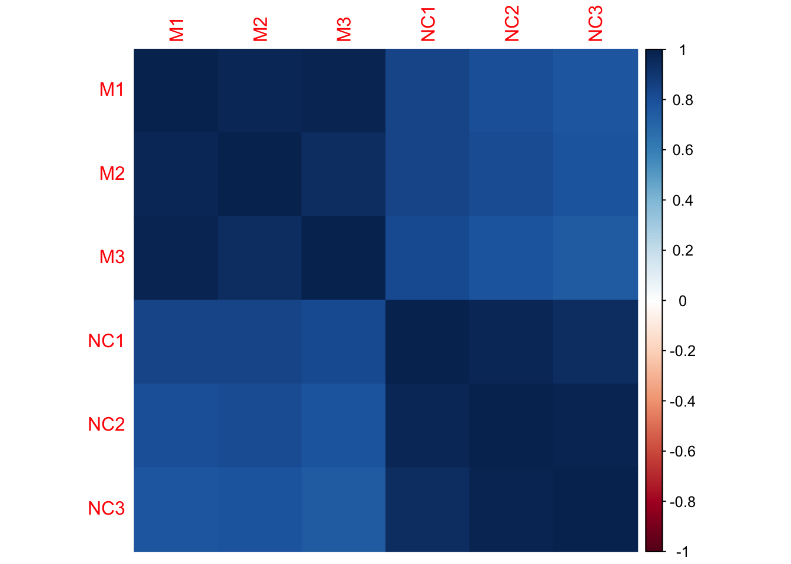
- Which samples appear to be best correlated with each other?
- Which samples don’t appear to be as well correlated with each other?
Hierarchical clustering
Hierarchical clustering requires distances between samples. Let’s use dist() to compute these distances, and hclust() to generate the hierarchical clustering object.
Using these distances, we cluster the samples using hierarchical clustering:
The output of this can be plotted:
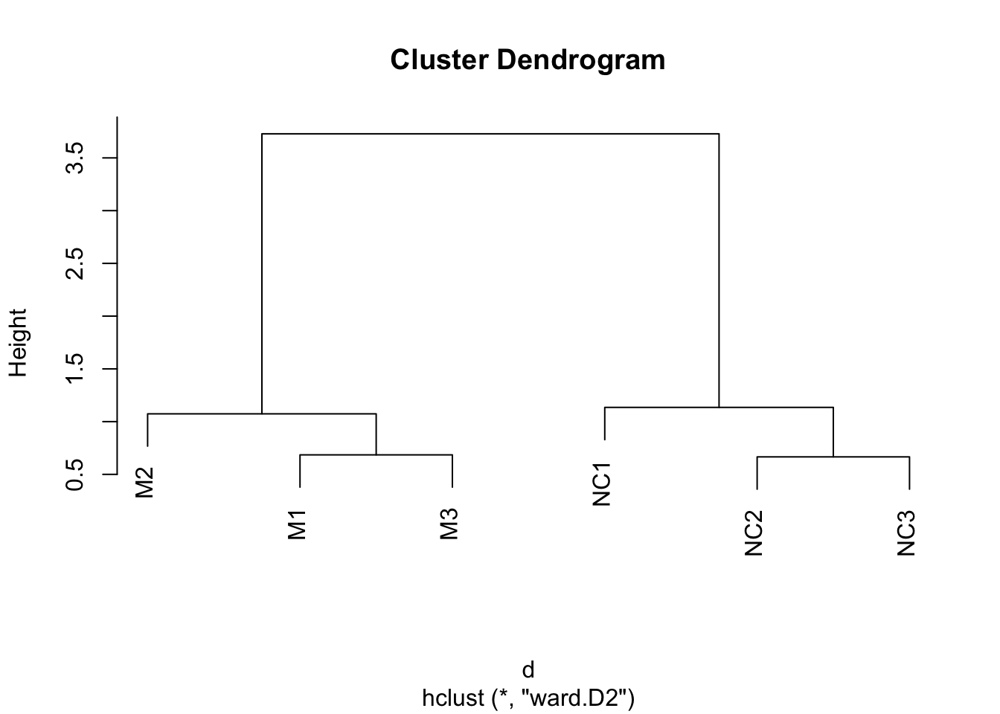
Can you guess how many clusters could best fit the data?
Now let’s add a heatmap to this dendrogram, so we can see the values of genes in each cluster. For this we will use the heatmap() function.
First let’s just try the heatmap function:
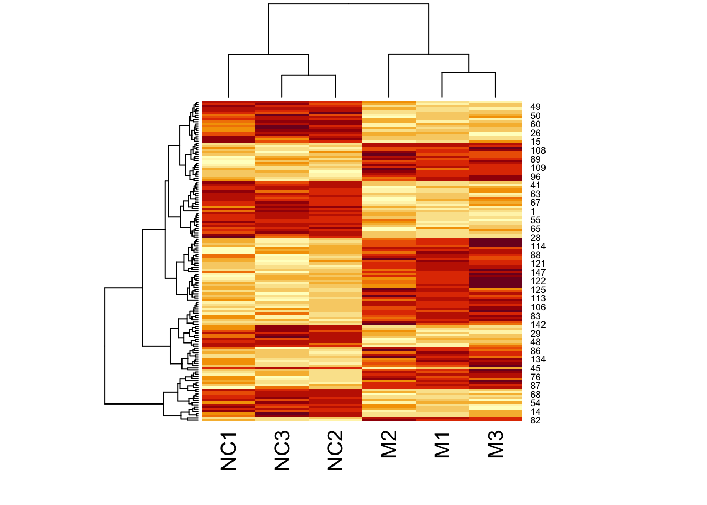
We can clearly see the data separated into two. But now let’s colour-code samples based on cluster assignments.
We get cluster assignments by “cutting” the dendrogram for two clusters (something we expect from our experimental design).
We use cutree() for this.
Let’s look at our assigned labels:
## M1 M2 M3 NC1 NC2 NC3
## 1 1 1 2 2 2Let’s assign colours to the clusters so that cluster 1 is in pink, and cluster 2 is in green:
Look at clust_colours:
## [1] "pink" "pink" "pink" "green" "green" "green"Now let’s plot the heatmap using these assigned cluster labels:
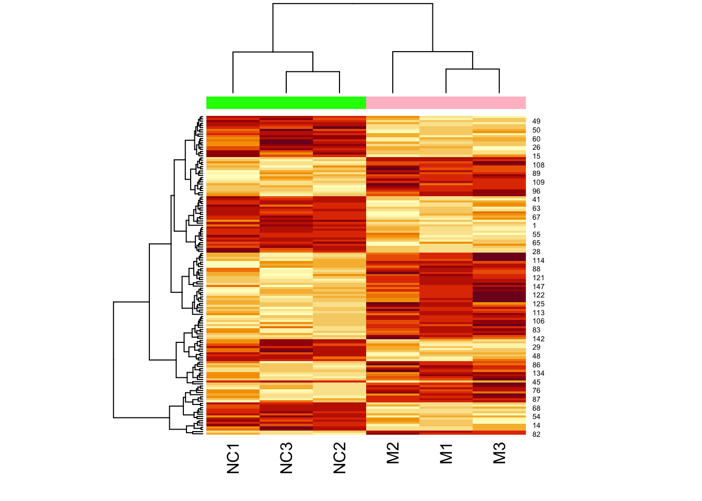
Note that the two colours are completely divided (i.e., there is no interspersed pink and green).
However, not all datasets are this simple. Let’s cluster a bladder cancer gene expression dataset.
This is in the R package, bladderbatch which we have already installed.
## Loading required package: Biobase## Loading required package: BiocGenerics##
## Attaching package: 'BiocGenerics'## The following objects are masked from 'package:stats':
##
## IQR, mad, sd, var, xtabs## The following objects are masked from 'package:base':
##
## anyDuplicated, aperm, append, as.data.frame, basename, cbind,
## colnames, dirname, do.call, duplicated, eval, evalq, Filter, Find,
## get, grep, grepl, intersect, is.unsorted, lapply, Map, mapply,
## match, mget, order, paste, pmax, pmax.int, pmin, pmin.int,
## Position, rank, rbind, Reduce, rownames, sapply, saveRDS, setdiff,
## table, tapply, union, unique, unsplit, which.max, which.min## Welcome to Bioconductor
##
## Vignettes contain introductory material; view with
## 'browseVignettes()'. To cite Bioconductor, see
## 'citation("Biobase")', and for packages 'citation("pkgname")'.Load the dataset:
We will use specialized functions to get the expression data and sample information.
How many genes and samples do we have in this dataset?
Let us use the same code as above to cluster these samples:
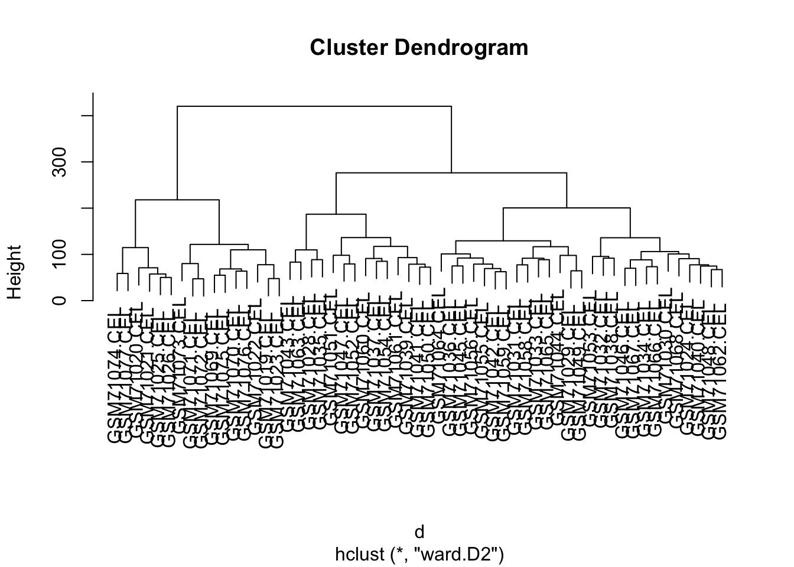
How many clusters do we see?
Let’s assume three clusters, and assign colours to these. As before we use cutree():
Look at the colour assignments?
## h3
## 1 2 3
## 16 27 14Let’s just plot the heatmap.
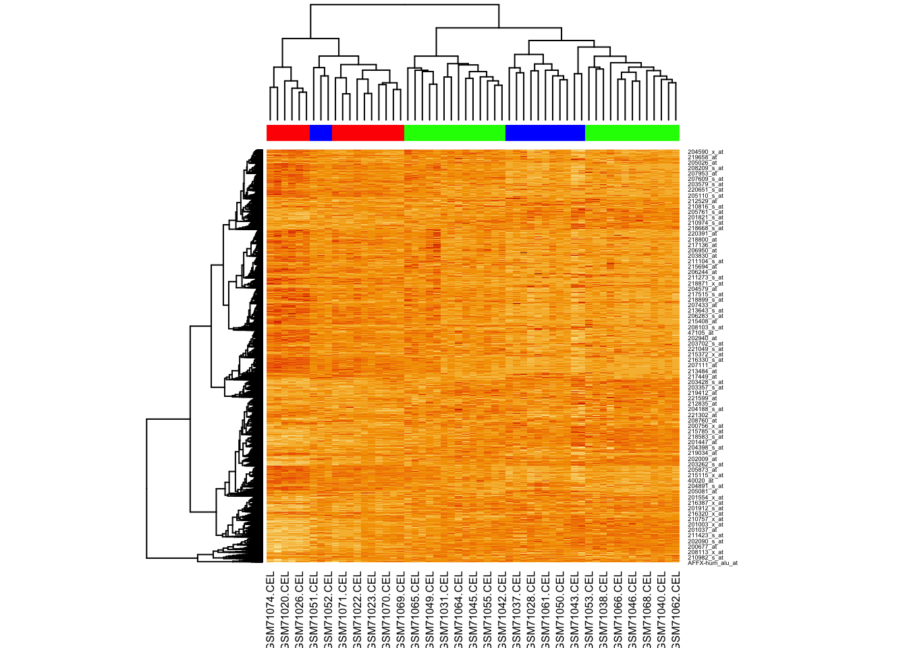
Why aren’t the samples clustering?
Now try providing the hclustfun to heatmap() so it uses the same method to cluster as we did.
For this we will create a custom function:
And now we run heatmap again, using our clustering function:
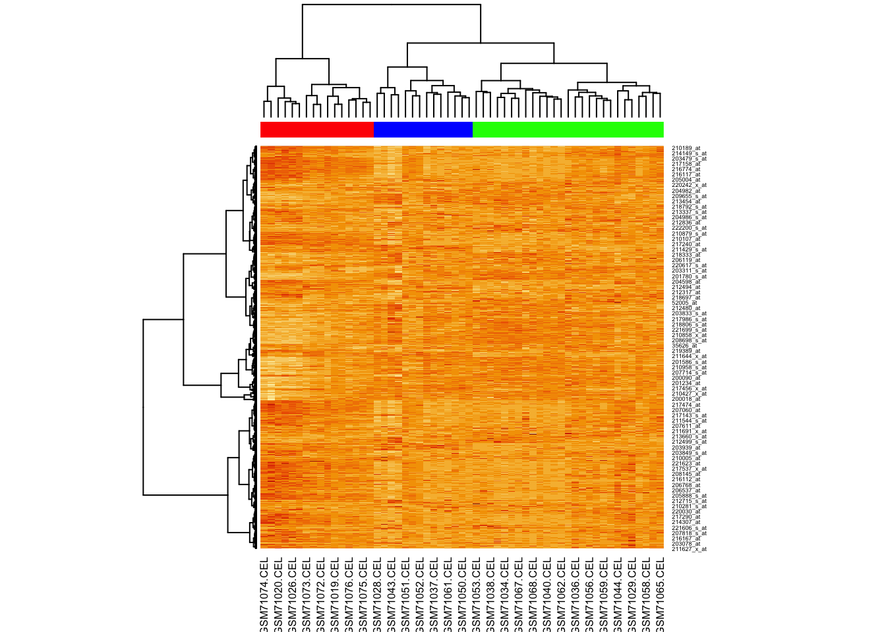
K-means clustering
Let’s try using k-means clustering, asking for three clusters:
## K-means clustering with 3 clusters of sizes 61, 22, 64
##
## Cluster means:
## M1 M2 M3 NC1 NC2 NC3
## 1 3.947440 3.946048 4.012209 3.922949 3.950984 4.004362
## 2 7.416536 7.406216 7.414799 7.548674 7.534414 7.520608
## 3 5.553148 5.499583 5.642404 5.426931 5.435363 5.353342
##
## Clustering vector:
## 1 2 3 4 5 6 7 8 9 10 11 12 13 14 15 16 17 18 19 20
## 3 1 1 3 3 1 3 3 3 1 2 1 3 2 1 3 2 2 1 3
## 21 22 23 24 25 26 27 28 29 30 31 32 33 34 35 36 37 38 39 40
## 3 3 1 1 1 1 2 3 1 3 3 2 1 3 3 1 1 1 3 1
## 41 42 43 44 45 46 47 48 49 50 51 52 53 54 55 56 57 58 59 60
## 3 2 2 1 1 2 1 1 1 1 3 1 2 2 3 3 1 1 3 1
## 61 62 63 64 65 66 67 68 69 70 71 72 73 74 75 76 77 78 79 80
## 1 2 3 1 3 1 3 2 3 1 3 3 3 3 3 2 1 1 3 2
## 81 82 83 84 85 86 87 88 89 90 91 92 93 94 95 96 97 98 99 100
## 3 2 1 3 3 1 2 3 1 3 1 1 1 1 1 1 1 3 1 3
## 101 102 103 104 105 106 107 108 109 110 111 112 113 114 115 116 117 118 119 120
## 1 3 1 1 1 1 2 3 1 3 3 1 3 3 3 3 2 2 1 3
## 121 122 123 124 125 126 127 128 129 130 131 132 133 134 135 136 137 138 139 140
## 3 3 2 1 3 3 3 1 3 3 3 3 3 1 1 1 1 1 1 3
## 141 142 143 144 145 146 147
## 3 1 3 2 3 3 3
##
## Within cluster sum of squares by cluster:
## [1] 193.59229 81.44264 166.24343
## (between_SS / total_SS = 74.3 %)
##
## Available components:
##
## [1] "cluster" "centers" "totss" "withinss" "tot.withinss"
## [6] "betweenss" "size" "iter" "ifault"Using clValid to determine number of clusters
Use the clValid() function to validate clusters using the:
- Dunn index,
- silhouette scores, and
- connectivity
validation_data <- clValid(
mouse_exp,
2:6, # num. clusters to evaluate
clMethods = c("hier","kmeans"), # methods to eval.
validation = "internal"
)Let’s look at the results:
##
## Clustering Methods:
## hierarchical kmeans
##
## Cluster sizes:
## 2 3 4 5 6
##
## Validation Measures:
## 2 3 4 5 6
##
## hierarchical Connectivity 5.3270 14.2528 20.7520 27.0726 30.6194
## Dunn 0.1291 0.0788 0.0857 0.0899 0.0899
## Silhouette 0.5133 0.4195 0.3700 0.3343 0.3233
## kmeans Connectivity 13.2548 17.6651 37.3980 43.2655 50.6095
## Dunn 0.0464 0.0873 0.0777 0.0815 0.0703
## Silhouette 0.4571 0.4182 0.3615 0.3367 0.3207
##
## Optimal Scores:
##
## Score Method Clusters
## Connectivity 5.3270 hierarchical 2
## Dunn 0.1291 hierarchical 2
## Silhouette 0.5133 hierarchical 2All measures of clustering consistently indicate that two clusters best fit the data.
Now let’s cluster:
d <- dist(t(log(mouse_exp)))
h <- hclust(d,method="ward.D2")
cluster_ids <- cutree(h, k = 2)
clust_colors <- c("dodgerblue","orangered")[cluster_ids]
heatmap(
as.matrix(mouse_exp),
hclustfun = myhclust,
ColSideColors = clust_colors
)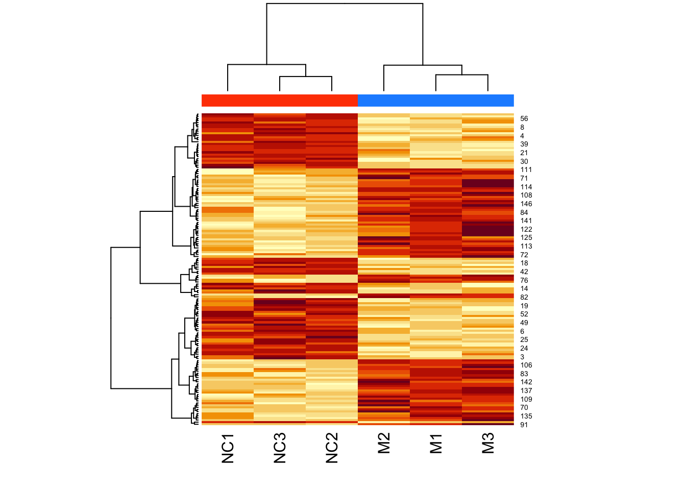
Bonus Exercise
For your exercise, try the following:
- Load the MASS package using:
library(MASS) - Import
crabsdataset using:data(crabs) - Learn about this dataset using:
?crabs - Extract the numeric columns describing the crab measurements (“FL”, “RW”, “CL”, “CW”, “BD”)
- Cluster the numeric columns using your method of choice
- Plot and color your data by clusters, by species (
sp), andsex - Do your clusters seem to separate these groups in the same way?
Bonus Exercise Results
Load packages and data, subset needed columns:
Learn more about the data:
## sp sex index FL RW CL CW BD
## 1 B M 1 8.1 6.7 16.1 19.0 7.0
## 2 B M 2 8.8 7.7 18.1 20.8 7.4
## 3 B M 3 9.2 7.8 19.0 22.4 7.7
## 4 B M 4 9.6 7.9 20.1 23.1 8.2
## 5 B M 5 9.8 8.0 20.3 23.0 8.2
## 6 B M 6 10.8 9.0 23.0 26.5 9.8Subset needed columns:
Perform hierarchical clustering:
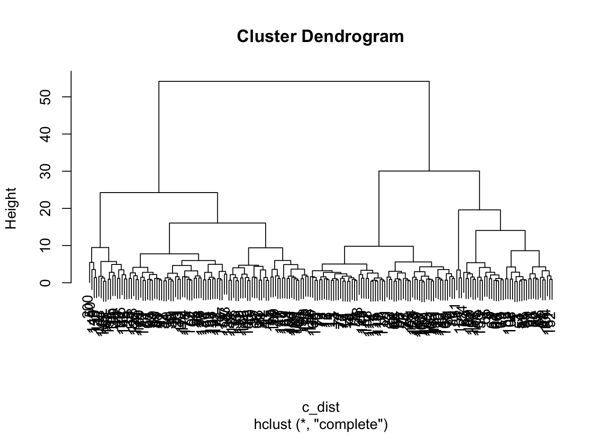
Colour-code samples based on cluster assignment. Assume there are two clusters.
Now create a pairs plot, but colour-code by: 1. by gene-expression based clusters 2. by species 3. by sex


Hierarchical clustering:
h <- hclust(dist(crabs_meas),method="ward.D2")
c2 <- cutree(h,k=2)
hclust_fun <- function(x){
f <- hclust(x, method = "ward.D2");
return(f)
}
library(RColorBrewer)
heatmap(
as.matrix(crabs_meas),
hclustfun = hclust_fun,
col = brewer.pal("Blues",n=8),
RowSideColors = c("pink","brown")[c2],
ColSideColors = rep("green",5)
)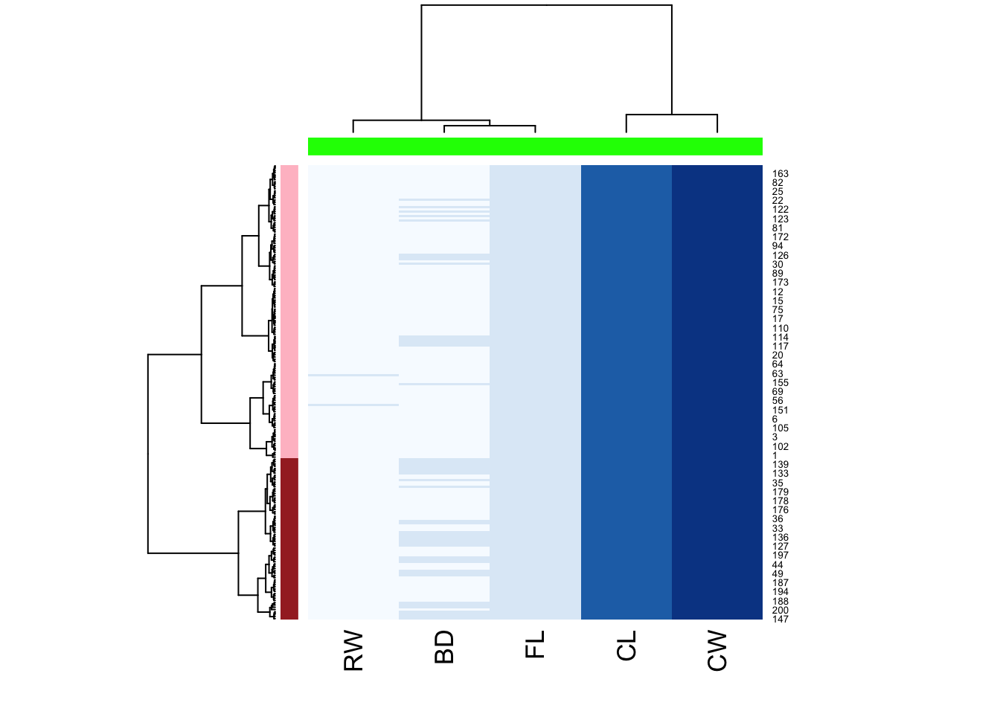
Plot by sex:
heatmap(
as.matrix(crabs_meas),
hclustfun = hclust_fun,
col = brewer.pal("Blues",n=8),
RowSideColors = c("pink","brown")[factor(crabs$sex)],
ColSideColors = rep("green",5)
)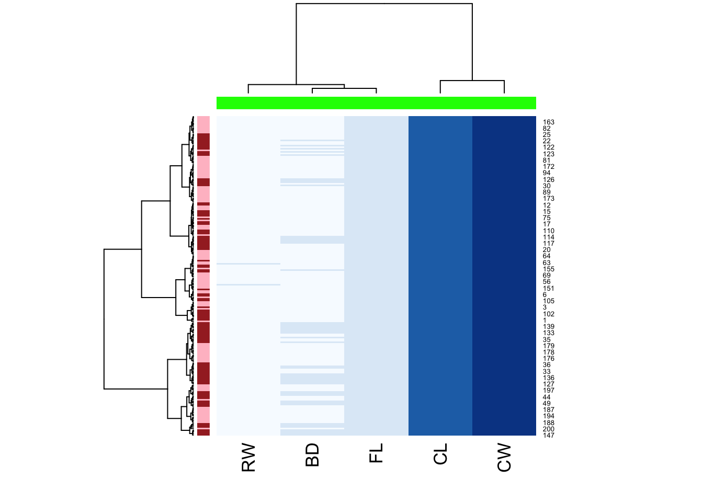